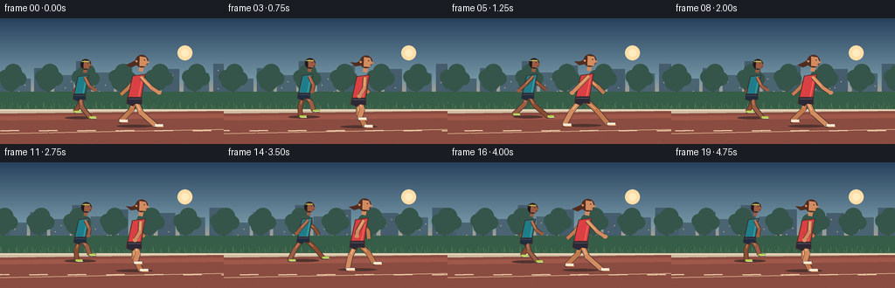
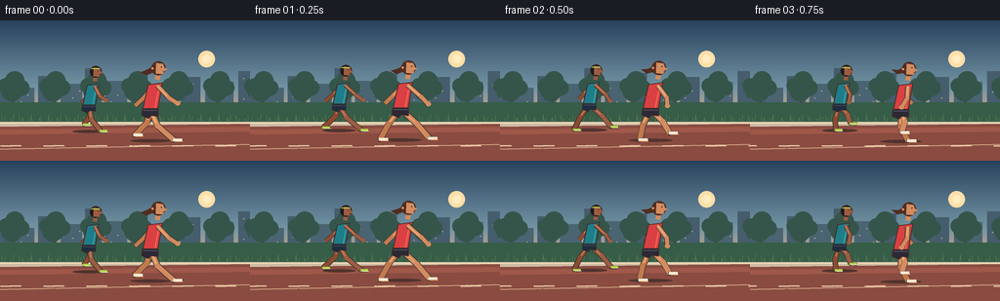

CODING AGENTS AS PIXEL WORLD MODELS
traex/GPT-5.6-Sol · instance_preservation_0033
点击播放 · 原生 RGB 像素
逐轮保存的候选
回放视频、检查图与代码变化。
每份候选均可单独播放。实际图片检查记录在下方工具轨迹中。
候选 01播放与检查图
点击播放 · 原生 RGB 像素


展开代码变化
--- 上一保存版本
+++ 本次保存版本
@@ -0,0 +1,207 @@
+from pathlib import Path
+import math
+import numpy as np
+from PIL import Image, ImageDraw, ImageFilter
+import artifact_io
+
+W, H, N = 256, 144, 20
+SS = 4
+
+def sc(v): return int(round(v * SS))
+def pts(seq): return [(sc(x), sc(y)) for x, y in seq]
+def ellipse(d, box, fill, outline=None, width=1):
+ d.ellipse(tuple(sc(v) for v in box), fill=fill, outline=outline, width=sc(width) if outline else 1)
+def line(d, seq, fill, width, joint='curve'):
+ d.line(pts(seq), fill=fill, width=sc(width), joint=joint)
+def poly(d, seq, fill, outline=None, width=1):
+ d.polygon(pts(seq), fill=fill)
+ if outline: d.line(pts(seq+[seq[0]]), fill=outline, width=sc(width), joint='curve')
+
+def lerp(a,b,t): return tuple(int(a[i]*(1-t)+b[i]*t) for i in range(3))
+
+def make_bg(frame):
+ # Cinematic dawn gradient.
+ hh, ww = H*SS, W*SS
+ arr = np.zeros((hh,ww,3), dtype=np.uint8)
+ stops = [(0.0,(35,63,93)),(.48,(112,148,166)),(.74,(239,174,116)),(1,(255,213,157))]
+ for yy in range(hh):
+ t=yy/(hh-1)
+ for j in range(len(stops)-1):
+ if stops[j][0] <= t <= stops[j+1][0]:
+ u=(t-stops[j][0])/(stops[j+1][0]-stops[j][0]); c=lerp(stops[j][1],stops[j+1][1],u); break
+ arr[yy,:,:]=c
+ im=Image.fromarray(arr,'RGB'); d=ImageDraw.Draw(im)
+ # sun and subtle haze
+ ellipse(d,(203,31,220,48),(255,224,170))
+ ellipse(d,(207,35,216,44),(255,238,194))
+ # Camera tracks runners; distant objects move slowly.
+ pan=frame*1.6
+ # distant skyline
+ skyline=[(-8,64,18,86),(16,69,35,86),(39,57,58,86),(62,65,84,86),(87,49,104,86),(108,62,130,86),(134,54,151,86),(156,67,180,86),(185,58,205,86),(210,63,239,86),(244,52,264,86)]
+ for k,(x1,y1,x2,y2) in enumerate(skyline):
+ x1-=pan*.25; x2-=pan*.25
+ while x2 < 0: x1+=290; x2+=290
+ color=(70,98,114) if k%2 else (65,91,108)
+ d.rectangle((sc(x1),sc(y1),sc(x2),sc(y2)),fill=color)
+ # tiny window highlights
+ if x2-x1>13:
+ for wy in range(int(y1+7),84,7):
+ for wx in np.arange(x1+5,x2-2,7):
+ if (int(wx+wy+k)%3)==0:
+ d.rectangle((sc(wx),sc(wy),sc(wx+1),sc(wy+1)), fill=(174,166,135))
+ # distant tree silhouettes, repeating for smooth pan
+ for i in range(-1,9):
+ x=i*42+13-pan*.55
+ trunk=(62,68,65)
+ d.rectangle((sc(x-1.3),sc(70),sc(x+1.3),sc(98)),fill=trunk)
+ for ox,oy,r in [(-7,-2,8),(2,-7,10),(9,0,8),(-1,3,11)]:
+ ellipse(d,(x+ox-r,69+oy-r,x+ox+r,69+oy+r),(48,83,73))
+ # layered park verge
+ poly(d,[(-5,84),(261,84),(261,107),(-5,107)],(49,91,70))
+ # soft grass blades / highlights
+ for i in range(70):
+ x=(i*29 + 7 - frame*2.8)%270-7
+ h=2+(i*7)%6
+ col=(82,124,84) if i%3 else (108,141,91)
+ line(d,[(x,103),(x+((i%3)-1)*1.4,103-h)],col,.55)
+ # curb
+ poly(d,[(-2,104),(258,104),(258,110),(-2,110)],(205,190,165))
+ line(d,[(-2,105),(258,105)],(245,225,193),1)
+ # track in perspective
+ poly(d,[(-2,109),(258,106),(258,145),(-2,145)],(136,74,64))
+ poly(d,[(-2,112),(258,109),(258,114),(-2,117)],(157,86,72))
+ # lane lines move left; broken highlight gives motion cue
+ line(d,[(-5,132),(260,127)],(221,177,144),1)
+ for i in range(-2,8):
+ x=i*44-(frame*5.0)%44
+ poly(d,[(x,128.2),(x+21,127.8),(x+22,129.0),(x+1,129.5)],(234,202,165))
+ # foreground little track grit
+ for i in range(34):
+ x=(i*47-frame*6)%267-5; y=116+(i*13)%27
+ ellipse(d,(x,y,x+.7,y+.45),(111,60,56))
+ return im
+
+def limb(d,a,b,c,skin,skin_hi,width=5):
+ # dark edge then warm body color and highlight, with rounded joints
+ edge=(66,48,43)
+ line(d,[a,b,c],edge,width+1.3)
+ line(d,[a,b,c],skin,width)
+ line(d,[(a[0]-.3,a[1]-.2),(b[0]-.3,b[1]-.2)],skin_hi,max(1,width*.22))
+ r=width*.52
+ ellipse(d,(b[0]-r,b[1]-r,b[0]+r,b[1]+r),skin)
+
+def draw_runner(im, x, ground, scale, phase, who, bob=0):
+ d=ImageDraw.Draw(im)
+ s=scale
+ # Identity palettes and body dimensions
+ if who==1:
+ skin=(154,91,66); skin_hi=(201,132,92); edge=(58,42,42)
+ top=(26,124,138); top_hi=(53,166,172); shorts=(26,42,61); shoe=(183,214,80); sole=(229,239,188)
+ hair=(24,22,27)
+ else:
+ skin=(210,139,96); skin_hi=(242,180,124); edge=(70,44,39)
+ top=(218,62,66); top_hi=(246,100,87); shorts=(39,37,52); shoe=(245,236,217); sole=(255,166,108)
+ hair=(76,42,30)
+ y=ground+bob
+ hip=(x, y-31*s); shoulder=(x+5.0*s,y-57*s); neck=(x+7*s,y-64*s)
+
+ # ground shadow (fixed identity-sized shadow, subtly reacting to airborne phase)
+ flight=.5+.5*math.sin(phase*2)
+ sw=22*s-flight*2
+ ellipse(d,(x-sw,y-1.3,x+sw,y+2.0),(77,48,45))
+
+ # Legs: alternating strides, geometrically articulated. Back leg first.
+ legdata=[]
+ for lp in (phase+math.pi, phase):
+ stride=math.sin(lp)
+ lift=max(0.0,-math.cos(lp))*8.5*s
+ fx=x + 25*s*stride + 4*s
+ fy=y-lift
+ # knee drops naturally and bends forward during recovery
+ kx=x + 11*s*stride + (5.5*s if lift>1 else -1.5*s)
+ ky=y-15.5*s-lift*.28 + 1.3*s*math.cos(lp)
+ legdata.append(((kx,ky),(fx,fy),lp))
+ for idx,(knee,foot,lp) in enumerate(legdata):
+ shade=tuple(max(0,c-18) for c in skin) if idx==0 else skin
+ limb(d,hip,knee,foot,shade,skin_hi,5.2*s)
+ # ankle and clearly directional running shoe
+ fx,fy=foot
+ line(d,[(fx-1.5*s,fy),(fx+8.5*s,fy+.2*s)],edge,4.1*s)
+ line(d,[(fx-1.1*s,fy-.35*s),(fx+8.1*s,fy-.15*s)],shoe,3.1*s)
+ line(d,[(fx+1*s,fy+1.25*s),(fx+8.6*s,fy+1.1*s)],sole,1.0*s)
+
+ # Rear arm before torso. Arms pump opposite the legs.
+ arm_phases=[phase,phase+math.pi]
+ for idx,ap in enumerate(arm_phases):
+ av=math.sin(ap)
+ sh=(shoulder[0]+(-2 if idx==0 else 2)*s, shoulder[1]+2*s)
+ elbow=(sh[0]-13*s*av+1*s, sh[1]+12*s)
+ hand=(elbow[0]-9*s*math.sin(ap+.55), elbow[1]+7*s+2*s*math.cos(ap))
+ if idx==0: limb(d,sh,elbow,hand,tuple(max(0,c-16) for c in skin),skin_hi,3.8*s)
+
+ # Torso: forward lean, distinct shirt and shorts.
+ poly(d,[(shoulder[0]-7*s,shoulder[1]+1*s),(shoulder[0]+7*s,shoulder[1]-1*s),
+ (hip[0]+7*s,hip[1]+2*s),(hip[0]-8*s,hip[1]+2*s)],top,edge,1)
+ # top light stripe / fabric crease
+ line(d,[(shoulder[0]+4*s,shoulder[1]+2*s),(hip[0]+4.5*s,hip[1]-1*s)],top_hi,1.15*s)
+ # shorts
+ poly(d,[(hip[0]-8*s,hip[1]-1*s),(hip[0]+8*s,hip[1]-1*s),(hip[0]+8*s,hip[1]+7*s),
+ (hip[0]+1*s,hip[1]+6*s),(hip[0]-2*s,hip[1]+9*s),(hip[0]-9*s,hip[1]+6*s)],shorts,edge,.8)
+ line(d,[(hip[0]-7*s,hip[1]+1*s),(hip[0]+7*s,hip[1]+1*s)],(92,89,105),.7*s)
+
+ # Front arm.
+ ap=arm_phases[1]; av=math.sin(ap)
+ sh=(shoulder[0]+2*s,shoulder[1]+2*s)
+ elbow=(sh[0]-13*s*av+1*s, sh[1]+12*s)
+ hand=(elbow[0]-9*s*math.sin(ap+.55), elbow[1]+7*s+2*s*math.cos(ap))
+ limb(d,sh,elbow,hand,skin,skin_hi,3.8*s)
+ ellipse(d,(hand[0]-2.5*s,hand[1]-2.2*s,hand[0]+2.7*s,hand[1]+2.2*s),skin)
+
+ # Neck, head, face profile looking right.
+ line(d,[(neck[0],neck[1]+3*s),(neck[0]+1*s,neck[1]-2*s)],skin,5*s)
+ hc=(x+8.2*s,y-72.5*s); r=7.2*s
+ ellipse(d,(hc[0]-r,hc[1]-r,hc[0]+r,hc[1]+r),edge)
+ # Hair base then face layered over it.
+ ellipse(d,(hc[0]-6.4*s,hc[1]-6.5*s,hc[0]+6.1*s,hc[1]+6.5*s),hair)
+ poly(d,[(hc[0]-2.5*s,hc[1]-5.5*s),(hc[0]+4.5*s,hc[1]-4.5*s),
+ (hc[0]+6.2*s,hc[1]),(hc[0]+9.0*s,hc[1]+1.3*s),(hc[0]+5.8*s,hc[1]+2.4*s),
+ (hc[0]+4.4*s,hc[1]+6*s),(hc[0]-2.7*s,hc[1]+5.4*s)],skin)
+ # nose, eye, mouth
+ poly(d,[(hc[0]+5.4*s,hc[1]-.8*s),(hc[0]+9*s,hc[1]+1.2*s),(hc[0]+5.1*s,hc[1]+2*s)],skin)
+ ellipse(d,(hc[0]+2.5*s,hc[1]-1.7*s,hc[0]+3.5*s,hc[1]-.7*s),(40,31,30))
+ line(d,[(hc[0]+4.1*s,hc[1]+3.3*s),(hc[0]+6.3*s,hc[1]+3.1*s)],(104,51,48),.6*s)
+ if who==2:
+ # flowing ponytail is a key persistent identity marker
+ swing=2.2*math.sin(phase+.8)
+ poly(d,[(hc[0]-5*s,hc[1]-2*s),(hc[0]-11*s,hc[1]+1*s),
+ (hc[0]-18*s,hc[1]+2*s+swing),(hc[0]-12*s,hc[1]+6*s+swing*.5),
+ (hc[0]-5*s,hc[1]+4*s)],hair)
+ ellipse(d,(hc[0]-7*s,hc[1]-1*s,hc[0]-4.8*s,hc[1]+1.2*s),(245,146,94))
+ else:
+ # teal runner's consistent bright headband
+ line(d,[(hc[0]-5.2*s,hc[1]-3.7*s),(hc[0]+4.5*s,hc[1]-4.1*s)],(183,214,80),1.6*s)
+
+
+def render(i):
+ im=make_bg(i)
+ # cyclic pace: 2.5 strides over 5 seconds; two stable, recognizable instances.
+ phase=2*math.pi*(i/8.0)
+ # tiny camera-framing drift and vertical running bounce
+ # runner in teal is farther away, always left/rear
+ bob1=-abs(math.sin(phase))*1.45
+ draw_runner(im, 91+1.2*math.sin(i*.23), 113.5, .84, phase+.42, 1, bob1)
+ # coral runner foreground; different cadence phase but same identities/costumes
+ bob2=-abs(math.sin(phase+.62))*1.8
+ draw_runner(im, 153+1.5*math.sin(i*.19+.6), 124, 1.02, phase+.92, 2, bob2)
+ # warm light veil and downsample for clean anti-aliasing
+ veil=Image.new('RGB',im.size,(255,179,115))
+ im=Image.blend(im,veil,.025)
+ return np.asarray(im.resize((W,H),Image.Resampling.LANCZOS),dtype=np.uint8)
+
+def main():
+ frames=np.stack([render(i) for i in range(N)],axis=0)
+ assert frames.shape==(20,144,256,3) and frames.dtype==np.uint8
+ artifact_io.save(frames,Path(__file__).resolve().parent)
+ print('saved',frames.shape,frames.dtype,'range',frames.min(),frames.max())
+
+if __name__=='__main__': main()
可观测工具轨迹
实际执行的命令与返回图片。
命令 1exit 0
/bin/bash -lc "cat prompt.txt && printf '\\n---RULES---\\n' && cat GENERATION_RULES.md && printf '\\n---SPEC---\\n' && cat task_spec.json"
命令 2exit 0
/bin/bash -lc "find . -maxdepth 2 -type f -printf '%p\\n' | sort && printf '\\nTOOLS\\n' && command -v ffmpeg || true && command -v blender || true && python3 - <<'PY' mods=['numpy','PIL','cv2','imageio','moviepy','cairo','moderngl'] for m in mods: try: __import__(m); print(m,'OK') except Exception as e: print(m,'NO',str(e)[:80]) PY"
命令 3exit 0
/bin/bash -lc "sed -n '1,240p' artifact_io.py"
命令 4exit 0
/bin/bash -lc "cat > generate.py <<'PY'
from pathlib import Path
import math
import numpy as np
from PIL import Image, ImageDraw, ImageFilter
import artifact_io
W, H, N = 256, 144, 20
SS = 4
def sc(v): return int(round(v * SS))
def pts(seq): return [(sc(x), sc(y)) for x, y in seq]
def ellipse(d, box, fill, outline=None, width=1):
d.ellipse(tuple(sc(v) for v in box), fill=fill, outline=outline, width=sc(width) if outline else 1)
def line(d, seq, fill, width, joint='curve'):
d.line(pts(seq), fill=fill, width=sc(width), joint=joint)
def poly(d, seq, fill, outline=None, width=1):
d.polygon(pts(seq), fill=fill)
if outline: d.line(pts(seq+[seq[0]]), fill=outline, width=sc(width), joint='curve')
def lerp(a,b,t): return tuple(int(a[i]*(1-t)+b[i]*t) for i in range(3))
def make_bg(frame):
# Cinematic dawn gradient.
hh, ww = H*SS, W*SS
arr = np.zeros((hh,ww,3), dtype=np.uint8)
stops = [(0.0,(35,63,93)),(.48,(112,148,166)),(.74,(239,174,116)),(1,(255,213,157))]
for yy in range(hh):
t=yy/(hh-1)
for j in range(len(stops)-1):
if stops[j][0] <= t <= stops[j+1][0]:
u=(t-stops[j][0])/(stops[j+1][0]-stops[j][0]); c=lerp(stops[j][1],stops[j+1][1],u); break
arr[yy,:,:]=c
im=Image.fromarray(arr,'RGB'); d=ImageDraw.Draw(im)
# sun and subtle haze
ellipse(d,(203,31,220,48),(255,224,170))
ellipse(d,(207,35,216,44),(255,238,194))
# Camera tracks runners; distant objects move slowly.
pan=frame*1.6
# distant skyline
skyline=[(-8,64,18,86),(16,69,35,86),(39,57,58,86),(62,65,84,86),(87,49,104,86),(108,62,130,86),(134,54,151,86),(156,67,180,86),(185,58,205,86),(210,63,239,86),(244,52,264,86)]
for k,(x1,y1,x2,y2) in enumerate(skyline):
x1-=pan*.25; x2-=pan*.25
while x2 < 0: x1+=290; x2+=290
color=(70,98,114) if k%2 else (65,91,108)
d.rectangle((sc(x1),sc(y1),sc(x2),sc(y2)),fill=color)
# tiny window highlights
if x2-x1>13:
for wy in range(int(y1+7),84,7):
for wx in np.arange(x1+5,x2-2,7):
if (int(wx+wy+k)%3)==0:
d.rectangle((sc(wx),sc(wy),sc(wx+1),sc(wy+1)), fill=(174,166,135))
# distant tree silhouettes, repeating for smooth pan
for i in range(-1,9):
x=i*42+13-pan*.55
trunk=(62,68,65)
d.rectangle((sc(x-1.3),sc(70),sc(x+1.3),sc(98)),fill=trunk)
for ox,oy,r in [(-7,-2,8),(2,-7,10),(9,0,8),(-1,3,11)]:
ellipse(d,(x+ox-r,69+oy-r,x+ox+r,69+oy+r),(48,83,73))
# layered park verge
poly(d,[(-5,84),(261,84),(261,107),(-5,107)],(49,91,70))
# soft grass blades / highlights
for i in range(70):
x=(i*29 + 7 - frame*2.8)%270-7
h=2+(i*7)%6
col=(82,124,84) if i%3 else (108,141,91)
line(d,[(x,103),(x+((i%3)-1)*1.4,103-h)],col,.55)
# curb
poly(d,[(-2,104),(258,104),(258,110),(-2,110)],(205,190,165))
line(d,[(-2,105),(258,105)],(245,225,193),1)
# track in perspective
poly(d,[(-2,109),(258,106),(258,145),(-2,145)],(136,74,64))
poly(d,[(-2,112),(258,109),(258,114),(-2,117)],(157,86,72))
# lane lines move left; broken highlight gives motion cue
line(d,[(-5,132),(260,127)],(221,177,144),1)
for i in range(-2,8):
x=i*44-(frame*5.0)%44
poly(d,[(x,128.2),(x+21,127.8),(x+22,129.0),(x+1,129.5)],(234,202,165))
# foreground little track grit
for i in range(34):
x=(i*47-frame*6)%267-5; y=116+(i*13)%27
ellipse(d,(x,y,x+.7,y+.45),(111,60,56))
return im
def limb(d,a,b,c,skin,skin_hi,width=5):
# dark edge then warm body color and highlight, with rounded joints
edge=(66,48,43)
line(d,[a,b,c],edge,width+1.3)
line(d,[a,b,c],skin,width)
line(d,[(a[0]-.3,a[1]-.2),(b[0]-.3,b[1]-.2)],skin_hi,max(1,width*.22))
r=width*.52
ellipse(d,(b[0]-r,b[1]-r,b[0]+r,b[1]+r),skin)
def draw_runner(im, x, ground, scale, phase, who, bob=0):
d=ImageDraw.Draw(im)
s=scale
# Identity palettes and body dimensions
if who==1:
skin=(154,91,66); skin_hi=(201,132,92); edge=(58,42,42)
top=(26,124,138); top_hi=(53,166,172); shorts=(26,42,61); shoe=(183,214,80); sole=(229,239,188)
hair=(24,22,27)
else:
skin=(210,139,96); skin_hi=(242,180,124); edge=(70,44,39)
top=(218,62,66); top_hi=(246,100,87); shorts=(39,37,52); shoe=(245,236,217); sole=(255,166,108)
hair=(76,42,30)
y=ground+bob
hip=(x, y-31*s); shoulder=(x+5.0*s,y-57*s); neck=(x+7*s,y-64*s)
# ground shadow (fixed identity-sized shadow, subtly reacting to airborne phase)
flight=.5+.5*math.sin(phase*2)
sw=22*s-flight*2
ellipse(d,(x-sw,y-1.3,x+sw,y+2.0),(77,48,45))
# Legs: alternating strides, geometrically articulated. Back leg first.
legdata=[]
for lp in (phase+math.pi, phase):
stride=math.sin(lp)
lift=max(0.0,-math.cos(lp))*8.5*s
fx=x + 25*s*stride + 4*s
fy=y-lift
# knee drops naturally and bends forward during recovery
kx=x + 11*s*stride + (5.5*s if lift>1 else -1.5*s)
ky=y-15.5*s-lift*.28 + 1.3*s*math.cos(lp)
legdata.append(((kx,ky),(fx,fy),lp))
for idx,(knee,foot,lp) in enumerate(legdata):
shade=tuple(max(0,c-18) for c in skin) if idx==0 else skin
limb(d,hip,knee,foot,shade,skin_hi,5.2*s)
# ankle and clearly directional running shoe
fx,fy=foot
line(d,[(fx-1.5*s,fy),(fx+8.5*s,fy+.2*s)],edge,4.1*s)
line(d,[(fx-1.1*s,fy-.35*s),(fx+8.1*s,fy-.15*s)],shoe,3.1*s)
line(d,[(fx+1*s,fy+1.25*s),(fx+8.6*s,fy+1.1*s)],sole,1.0*s)
# Rear arm before torso. Arms pump opposite the legs.
arm_phases=[phase,phase+math.pi]
for idx,ap in enumerate(arm_phases):
av=math.sin(ap)
sh=(shoulder[0]+(-2 if idx==0 else 2)*s, shoulder[1]+2*s)
elbow=(sh[0]-13*s*av+1*s, sh[1]+12*s)
hand=(elbow[0]-9*s*math.sin(ap+.55), elbow[1]+7*s+2*s*math.cos(ap))
if idx==0: limb(d,sh,elbow,hand,tuple(max(0,c-16) for c in skin),skin_hi,3.8*s)
# Torso: forward lean, distinct shirt and shorts.
poly(d,[(shoulder[0]-7*s,shoulder[1]+1*s),(shoulder[0]+7*s,shoulder[1]-1*s),
(hip[0]+7*s,hip[1]+2*s),(hip[0]-8*s,hip[1]+2*s)],top,edge,1)
# top light stripe / fabric crease
line(d,[(shoulder[0]+4*s,shoulder[1]+2*s),(hip[0]+4.5*s,hip[1]-1*s)],top_hi,1.15*s)
# shorts
poly(d,[(hip[0]-8*s,hip[1]-1*s),(hip[0]+8*s,hip[1]-1*s),(hip[0]+8*s,hip[1]+7*s),
(hip[0]+1*s,hip[1]+6*s),(hip[0]-2*s,hip[1]+9*s),(hip[0]-9*s,hip[1]+6*s)],shorts,edge,.8)
line(d,[(hip[0]-7*s,hip[1]+1*s),(hip[0]+7*s,hip[1]+1*s)],(92,89,105),.7*s)
# Front arm.
ap=arm_phases[1]; av=math.sin(ap)
sh=(shoulder[0]+2*s,shoulder[1]+2*s)
elbow=(sh[0]-13*s*av+1*s, sh[1]+12*s)
hand=(elbow[0]-9*s*math.sin(ap+.55), elbow[1]+7*s+2*s*math.cos(ap))
limb(d,sh,elbow,hand,skin,skin_hi,3.8*s)
ellipse(d,(hand[0]-2.5*s,hand[1]-2.2*s,hand[0]+2.7*s,hand[1]+2.2*s),skin)
# Neck, head, face profile looking right.
line(d,[(neck[0],neck[1]+3*s),(neck[0]+1*s,neck[1]-2*s)],skin,5*s)
hc=(x+8.2*s,y-72.5*s); r=7.2*s
ellipse(d,(hc[0]-r,hc[1]-r,hc[0]+r,hc[1]+r),edge)
# Hair base then face layered over it.
ellipse(d,(hc[0]-6.4*s,hc[1]-6.5*s,hc[0]+6.1*s,hc[1]+6.5*s),hair)
poly(d,[(hc[0]-2.5*s,hc[1]-5.5*s),(hc[0]+4.5*s,hc[1]-4.5*s),
(hc[0]+6.2*s,hc[1]),(hc[0]+9.0*s,hc[1]+1.3*s),(hc[0]+5.8*s,hc[1]+2.4*s),
(hc[0]+4.4*s,hc[1]+6*s),(hc[0]-2.7*s,hc[1]+5.4*s)],skin)
# nose, eye, mouth
poly(d,[(hc[0]+5.4*s,hc[1]-.8*s),(hc[0]+9*s,hc[1]+1.2*s),(hc[0]+5.1*s,hc[1]+2*s)],skin)
ellipse(d,(hc[0]+2.5*s,hc[1]-1.7*s,hc[0]+3.5*s,hc[1]-.7*s),(40,31,30))
line(d,[(hc[0]+4.1*s,hc[1]+3.3*s),(hc[0]+6.3*s,hc[1]+3.1*s)],(104,51,48),.6*s)
if who==2:
# flowing ponytail is a key persistent identity marker
swing=2.2*math.sin(phase+.8)
poly(d,[(hc[0]-5*s,hc[1]-2*s),(hc[0]-11*s,hc[1]+1*s),
(hc[0]-18*s,hc[1]+2*s+swing),(hc[0]-12*s,hc[1]+6*s+swing*.5),
(hc[0]-5*s,hc[1]+4*s)],hair)
ellipse(d,(hc[0]-7*s,hc[1]-1*s,hc[0]-4.8*s,hc[1]+1.2*s),(245,146,94))
else:
# teal runner's consistent bright headband
line(d,[(hc[0]-5.2*s,hc[1]-3.7*s),(hc[0]+4.5*s,hc[1]-4.1*s)],(183,214,80),1.6*s)
def render(i):
im=make_bg(i)
# cyclic pace: 2.5 strides over 5 seconds; two stable, recognizable instances.
phase=2*math.pi*(i/8.0)
# tiny camera-framing drift and vertical running bounce
# runner in teal is farther away, always left/rear
bob1=-abs(math.sin(phase))*1.45
draw_runner(im, 91+1.2*math.sin(i*.23), 113.5, .84, phase+.42, 1, bob1)
# coral runner foreground; different cadence phase but same identities/costumes
bob2=-abs(math.sin(phase+.62))*1.8
draw_runner(im, 153+1.5*math.sin(i*.19+.6), 124, 1.02, phase+.92, 2, bob2)
# warm light veil and downsample for clean anti-aliasing
veil=Image.new('RGB',im.size,(255,179,115))
im=Image.blend(im,veil,.025)
return np.asarray(im.resize((W,H),Image.Resampling.LANCZOS),dtype=np.uint8)
def main():
frames=np.stack([render(i) for i in range(N)],axis=0)
assert frames.shape==(20,144,256,3) and frames.dtype==np.uint8
artifact_io.save(frames,Path(__file__).resolve().parent)
print('saved',frames.shape,frames.dtype,'range',frames.min(),frames.max())
if __name__=='__main__': main()
PY
python3 generate.py
ls -lh pixels.npz inspection.png transition_check.png index.html frames/00.png"命令 5exit 0
/bin/bash -lc "python3 - <<'PY'
from pathlib import Path
import numpy as np
from PIL import Image
z=np.load('pixels.npz')['pixels']
files=sorted(Path('frames').glob('*.png'))
arr=np.stack([np.asarray(Image.open(f)) for f in files])
print('frames:',len(files),'shape:',arr.shape,'dtype:',arr.dtype,'modes:',sorted({Image.open(f).mode for f in files}))
print('packed tensor:',z.shape,z.dtype)
print('consecutive changed pixels:',[int(np.any(arr[i]"'!=arr[i-1],axis=2).sum()) for i in range(1,20)])
print('"'required artifacts:',all(Path(p).exists() for p in ['pixels.npz','index.html','inspection.png','transition_check.png','generate.py']))
PY"保存候选 1 份；完成命令 5 次；可验证图片返回 0 张。原始 API 响应与完整日志保留在本地。